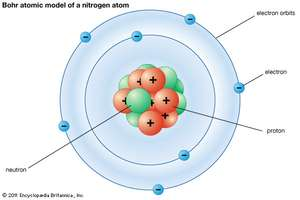
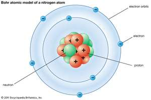

Aristotle
(384-322 B.C.)

He was a Greek philosopher who was a chief critic of Democritus’ atomos theory and a predominant reason it didn’t catch on until over a thousand years later. He believed that all materials were composed of varying amounts of earth, water, air, and fire.
 
